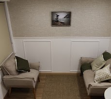

Atendimento online
A terapia online é uma solução prática e eficaz, pois você pode fazer sua sessão do conforto e segurança de sua casa ou de qualquer lugar do mundo, você só precisa de um espaço que tenha privacidade e uma internet de boa qualidade, a psicoterapia é realizada através de vídeo chamadas e os resultados são os mesmos do atendimento presencial.

Atendimento presencial
Fico feliz e honrada em saber que você tomou essa decisão de coragem de cuidar de você e tem interesse em dar este primeiro passo para cuidar de si em conjunto comigo. será um prazer te receber no consultório, em um espaço confortável e seguro localizado em são paulo, na avenida paulista, 550m do metro brigadeiro.
Palestras
A cada palestra um aprendizado novo, é assim que eu vejo cada momento que estou à frente de uma turma. a cada nova palestra eu gosto de sentar com o meu cliente para entender suas reais necessidades e expectativas com aquele conteúdo para que eu possa montar uma apresentação única, personalizada para a sua demanda.
Palestras
A cada palestra um aprendizado novo, é assim que eu vejo cada momento que estou à frente de uma turma. a cada nova palestra eu gosto de sentar com o meu cliente para entender suas reais necessidades e expectativas com aquele conteúdo para que eu possa montar uma apresentação única, personalizada para a sua demanda.
A Psicoterapia acontece através de sessões semanais, com duração de 50 minutos.
As sessões podem ser realizadas de forma presencial ou online. Durante as sessões, serão
abordados recursos técnicos e científicos para que o paciente possa aprender a lidar com suas
emoções, pensamentos e comportamentos.
Além disso, na psicoterapia você terá uma escuta empática, acolhedora e livre de julgamentos. O
ambiente é 100% sigiloso.
Não existe uma previsão mínima ou máxima de sessões de psicoterapia. Estima-se, uma média de
seis meses a um ano, podendo durar mais ou menos tempo a depender da demanda do
paciente.
Cada paciente tem seu processo e sua evolução de forma subjetiva, de modo que não é possível
estimar uma quantidade exata de sessões.
No entanto, o objetivo da psicoterapia é que o paciente se torne seu próprio terapeuta, logo
assim que percebemos a redução dos sintomas que o fez buscar a terapia e alcance seus objetivos,
inicia-se o processo gradual de espaçamento das sessões, até a alta terapêutica.
Não são aceitos planos de saúde.
Contudo, alguns planos possuem política de reembolso, que podem chegar até 100% do valor pago
pela consulta. Entre em contato com sua operadora para maiores esclarecimentos.
Se o seu plano tiver política de reembolso, você consegue solicitar com a nota fiscal das
sessões emitida pela psicóloga.
A abordagem utilizada é a Cognitivo-comportamental (TCC), essa abordagem busca entender a pessoa
a partir da relação dos seus comportamentos com os seus pensamentos e crenças. Os atendimentos
são pautados em uma prática baseada em Evidências.
Tem como intuito fazer com que o paciente tenha o necessário para se tornar seu próprio
terapeuta.